물류관리사-1교시 (2007-08-19 기출문제)
1과목: 물류관리론
1. 다음 중 물류에 관한 설명으로 옳지 않은 것은?
- 물류는 유통부문 중에서 수송, 보관, 하역, 포장 등의 업무를 전문적으로 취급하는 것이다.
- 물류는 상류에 상대되는 개념이다.
- 물류는 물자유통뿐만 아니라 서류 및 금전의 이동, 정보유통까지도 포함한다.
- 물류와 상류의 기능이 구분되는 배경은 경제구조의 대형화 ㆍ 광역화와 밀접한 관련이 있다.
- 협의의 관점에서 물류의 범위는 생산지점으로부터 소비 또는 이용지점까지 재화의 이동을 관리하는 것을 말한다.
(정답률: 31%)

2. 다음 중 특정 상품 부문만을 전문화ㆍ대형화하여 대량구입과 마진율 축소를 통해 낮은 가격대를 유지하는 업태는?
- 편의점
- 하이퍼마켓
- 양판점
- 할인점
- 카테고리 킬러
(정답률: 50%)
3. 다음은 물류관리의 기본 형태에 대한 그림이다. 이 그림에서 A, B, C 칸에 들어갈 표현으로 적당하게 묶인 것은 어느 것인가?
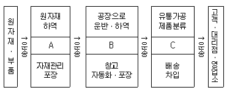
- A- 생산물류, B- 판매물류, C- 조달물류
- A- 생산물류, B- 조달물류, C- 판매물류
- A- 조달물류, B- 판매물류, C- 생산물류
- A- 조달물류, B- 생산물류, C- 판매물류
- A- 판매물류, B- 조달물류, C- 생산물류
(정답률: 58%)
4. 자동차 또는 TV 등의 제품을 완성품 조립능력이 있는 수입업자에게 운송할 경우, 부품 또는 반제품을 포장하는 방식은?
- Skid Base 포장
- Crate 포장
- Knock Down 포장
- Sleeper 포장
- Blister 포장
(정답률: 59%)
5. 물류의 기본기능과 함께 전자상거래가 발전되면서 공급체인을 효율적으로 지원하며, 해결책을 제시하고 변화ㆍ관리능력 및 전략적 컨설팅을 포함하는 물류영역을 무엇이라 하는가?
- 제4자물류(4PL)
- 운송주선업
- 제2자물류(2PL)
- NVOCC
- 포워더(Forwarder)
(정답률: 64%)
6. 국제표준화기구(ISO)의 일관수송체계 국제표준 파렛트(Pallet) 규격에 해당되지 않는 것은?
- 1,200㎜ × 1,200㎜
- 1,200㎜ × 1,000㎜
- 1,200㎜ × 800㎜
- 1,140㎜ × 1,140㎜
- 1,100㎜ × 1,100㎜
(정답률: 29%)
7. 원료 공급자로부터 최종소비자까지 이르는 전체 과정에 걸친 기업들의 공동 전략을 의미하는 것으로, 각 기업들이 외부의 다른 회사 사이에 일어나는 거래에서 서로 관련 있는 업무처리를 상호 협력하여 단순화시키는 것은 무엇인가?
- CRM
- SCM
- RFID
- TPL
- B2B
(정답률: 54%)
8. 파레토의 법칙(80-20곡선)을 이용한 ABC 분석과 관련된 설명으로 잘못된 것은?
- A 제품의 재고가용성은 C 제품 재고가용성의 50% 수준으로 유지한다.
- 80-20 곡선은 총 제품 종류의 20%가 총 매출액의 80%를 달성한다고 해석한다.
- A 제품은 창고 내에서 입ㆍ출고가 가장 용이한 장소에 보관한다.
- ABC 분석은 누적 판매 비율과 누적 품목 비율을 기준으로 한다.
- ABC 분석을 적용하여 총 물류비를 낮출 수 있다.
(정답률: 40%)
9. 다음 중 물류네트워크 설계와 관련된 내용으로잘못된 것은?
- 물류서비스 및 총 물류비 최소화를 고려하여 설정한다.
- 주요 의사결정 문제는 물류시설입지, 수송의사결정, 재고의사결정 등이다.
- 입지문제와 수송문제는 독립적으로 이루어진다.
- 물류시설 문제는 입지, 시설 수, 시설 규모 등을 결정하는 것이 핵심이다.
- 수송의사결정 부문은 수송수단 선택을 결정한다.
(정답률: 85%)
10. 다음 중 물류계획에 대한 설명으로 잘못된 것은?
- 계획 기간을 기준으로 장기, 중기, 단기로 구분한다.
- 운영계획은 장기계획에 속한다.
- 장기계획은 설비 투자와 같이 장기간에 걸쳐 이루어지는 사업을 대상으로 한다.
- 창고입지 결정, 수송수단 선택 등은 장기계획에 포함된다.
- 주문처리, 주문품 발송 등은 단기계획에 속한다.
(정답률: 24%)
11. 단위 시간당 필요한 자재를 소요량만큼만 조달하여 재고를 최소화하고, 다양한 재고감소 활동을 전개함으로써 비용절감, 품질개선, 작업능률 향상 등을 통해 생산성을 높이는 생산시스템을 무엇이라 하는가?
- Bullwhip Effect
- QR(Quick Response)
- ECR(Efficient Consumer Response)
- JIT(Just In Time)
- CR(Continuous Replenishment)
(정답률: 50%)
12. 다음은 어느 TV 제조업체의 최근 5개월 동안 컬러TV 판매량을 나타낸 것이다.
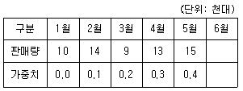
6월의 컬러TV 판매량을 단순 이동평균법, 가중 이동평균법, 단순 지수평활법을 이용하여 예측한 값을 각각 A, B, C라고 할 때, 그 크기를 비교한 것으로 옳은 것은? (단, 이동평균법에서 주기는 4개월, 단순 지수평활법에서 평활상수는 0.4를 각각 적용한다)
- A > B > C
- B > A > C
- A > C > B
- B > C > A
- C > B > A
(정답률: 17%)
13. 다음 RFID(Radio Frequency Identification)와 관련된 설명 중 잘못된 것은?
- RFID는 바코드와 달리 접촉하지 않아도 인식이 가능하다.
- RFID는 원거리 및 고속 이동시에도 인식이 가능하다.
- RFID칩은 바코드나 스마트카드에 비해 비용이 저렴하고 메모리 용량도 크다.
- RFID 기술은 가시대역 내에서 스캐닝하지 않아도 되는 편리함 때문에 그 활용 범위가 확대되고 있다.
- RFID는 나무, 직물, 플라스틱 등을 투과하여 정보의 교신이 가능하다.
(정답률: 60%)
14. 물류활동에 필요한 노동력, 수송수단, 보관설비, 정보시스템, 도로 등의 물류인프라를 참여기업과 연계하여 하나의 시스템으로 운영하는 것을 물류공동화라고 한다. 다음 중 물류공동화의 효과로 적절하지 않은 것은?
- 물류비용의 절감
- 수배송 효율의 향상
- 화물적재율 향상
- 참여기업의 보안능력 향상
- 물류작업의 생산성 향상
(정답률: 79%)
15. 다음에서 설명하는 수요예측 기법은 무엇인가?
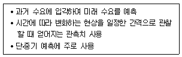
- 델파이법
- 수명주기 유추법
- 회귀분석법
- 시뮬레이션
- 지수평활법
(정답률: 31%)
16. 다음의 물류비 항목 중 발생형태별 분류에 의한 구분이 아닌 것은?
- 물류정보비
- 자가물류비
- 위탁물류비
- 타사지불 조달물류비
- 타사지불 판매물류비
(정답률: 46%)
17. 물류예산관리란 기업 방침에 따라 물류관리자가 담당자의 의견을 수렴하고 과학적으로 물류예산을 편성, 그 집행에 있어서 관련 비용지출을 조정, 통제하는 과정이다. 물류예산 편성절차를 가장 일반적으로 나열한 것은?
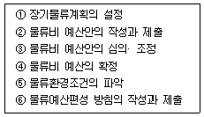
- ⑥ → ⑤ → ① → ② → ③ → ④
- ⑤ → ① → ⑥ → ② → ③ → ④
- ① → ⑥ → ⑤ → ② → ③ → ④
- ⑤ → ① → ⑥ → ③ → ④ → ②
- ① → ⑥ → ③ → ⑤ → ④ → ②
(정답률: 40%)
18. 다음은 물류정보 및 물류정보시스템에 관련된 설명이다. 다음 중 가장 적절하지 않은 것은?
- 물류정보는 성수기와 비수기의 정보량에 차이가 크다.
- 상품의 흐름과 물류정보의 흐름에는 충분한 시차가 필요하다.
- 물류정보시스템은 리드타임 정보와 수요예측 정보를 제공하여 기업의 생산량을 예측하고 물류거점 입지를 결정하는데 중요한 정보로 활용된다.
- 물류정보시스템을 통해 정보의 공유가 가능해짐으로써 생산계획과 조달계획을 조정할 수 있다.
- 사전에 설정된 설비, 시설활용 목표, 서비스 수준 목표, 그리고 실제 달성된 서비스 수준을 비교하여 물류활동의 참고자료로 이용할 수 있다.
(정답률: 65%)
19. 물류고객서비스의 요소는 거래 전 요소, 거래시 요소, 거래 후 요소 등으로 분류할 수 있다. 다음 중 거래시 요소가 아닌 것은?
- 품절률
- 주문정보
- 시스템의 정확성
- 주문주기의 일관성
- 설치, 보증, 교환, 수리
(정답률: 31%)
20. 제품의 수명주기를 도입기, 성장기, 성숙기, 쇠퇴기 등의 4단계로 구분할 때, 다음 각 단계별 물류전략에 대한 설명 중 적절하지 않은 것은?
- 도입기에는 판매망을 소수의 지점에 제한하는 물류전략이 적합하다.
- 성장기에는 제품의 유통지역이 가장 광범위한 시기이므로 장기적인 시장지위를 확보하기 위한 유통망 확충이 필요하다.
- 성숙기는 시장에서 제품가용성을 높이기 위해 많은 수의 재고거점이 필요한 시기이다.
- 성숙기는 많은 기업들의 진출과 과잉 생산능력에 의해 경쟁이 심화되는 시기이기 때문에 고객별 차별화된 물류서비스가 필요하다.
- 쇠퇴기에는 재고보유 거점 수가 줄어들어 제품의 재고가 소수의 지점에 집중하게 되므로 제품의 이동 형태와 재고 배치의 수정이 필요하다.
(정답률: 25%)
21. 다음 중 기업의 물류조직에 대한 설명으로 잘못된 것은?
- 조직의 형태는 직능형 조직, 라인과 스탭형 조직, 사업부제형 조직, 그리드형 조직 등이 있다.
- 직능형 조직은 라인부문과 스탭부문이 미분화된 조직형태이다.
- 라인과 스탭형 조직은 사업부제형 조직의 결점을 보완하여 라인과 스탭의 기능을 분화하고 실제작업부문과 지원부문으로 분리한 조직으로서 직능형 조직 다음에 등장한 형태이다.
- 사업부제형 조직은 기본적으로 상품별 사업부제와 지역별 사업부제의 두 가지 유형이 있으며, 라인과 스탭형 조직과 같은 집권조직에 비해 분권적인 조직이라는 특징이 있다.
- 그리드형 조직은 자사의 경영자와 모회사 물류본부의 지시를 받는 이중구조로 되어있다.
(정답률: 30%)
22. 라인과 스탭(Line & Staff)형 조직의 특징을 기술한 것 중 적절하지 않은 것은?
- 라인과 스탭을 분리함으로써 실시기능과 지원기능을 명확히 구별한다.
- 스탭은 라인을 지원한다.
- 라인과 스탭형 조직은 규모가 큰 물류기업에서는 적합하지 않은 형태로, 기업규모 확대에 따라 사업부제형이나 그리드형 조직 형태로 발전할 수 있다.
- 스탭이 물류현장에 대한 충분한 이해 없이 계획을 수립하는 경우, 문제점이 야기될 수도 있다.
- 라인은 재고 및 비용분석, 물류계획 등을 담당하고 스탭은 수주처리, 정보처리, 수송ㆍ포장ㆍ보관 등의 업무를 담당한다.
(정답률: 59%)
23. 다음 중 EAN-14(표준물류식별코드)에 관한 설명으로 잘못된 것은?
- 물류식별코드는 1~9로 표시된다.
- 바코드로 표시하기 위한 심벌 명칭은 ITF-14이다.
- 물류식별코드 외에 국가식별코드 3자리, 제조업체코드 4자리, 상품품목코드 5자리, 체크디지트 1자리 등으로 구성된다.
- 업체 간 거래단위인 물류단위(Logistics Unit)로 주로 골판지박스에 사용된다.
- EAN-13에 비해 제조업체코드의 자리수가 적다.
(정답률: 22%)
24. 다음 중 주문주기를 구성하는 요소가 아닌 것은?
- 오더어셈블리(Order Assembly) 시간
- 재고가용성
- 주문전달시간
- 인도시간
- 주문접수 대기시간
(정답률: 20%)
25. 다음 중 포장과 관련된 설명으로 잘못된 것은?
- 낱포장이란 파렛트 및 컨테이너 등을 사용하지 않고 포장화물 자체를 결속재료 등을 사용하여 단위화하는 것을 말한다.
- 포장 설계시 고려해야 할 사항으로는 하역성, 표시성, 작업성, 경제성, 보호성 등이 있다.
- 포장의 표준화는 하역작업의 능률을 향상시켜 유통의 합리화를 도모하는 것이다.
- 적정포장이란 상품의 품질보존, 취급상 편리성, 판매촉진 등을 만족시키는 가장 경제적인 포장을 말한다.
- 포장은 내용물을 보호하고 취급을 편리하게 하여 판매를 촉진하는 물류의 시발점이라 할 수 있다.
(정답률: 24%)
26. 다음 중 유통경로에 대한 설명으로 옳지 않은 것은?
- 생산에서 최종 소비에 이르기까지의 전 과정을 유통경로라고 한다.
- 유통경로의 기능에는 제품 및 서비스의 전달, 커뮤니케이션, 금융 등이 있다.
- 유통담당자들이 수행하는 유통경로 효율화는 기업물류비 절감에 직결된다.
- 제품에 대한 소유권을 보유하고 실질적인 위험을 감수하는 유통경로 구성원을 중심기능 구성원이라 하며, 이에는 도매 및 소매기관이 해당된다.
- 생산에서 소비에 이르기까지의 유통과정을 체계적으로 통합ㆍ조정하여 하나의 통합된 체계를 유지하는 것을 수평적 유통경로시스템이라 한다.
(정답률: 37%)
27. 물류합리화에 대한 다음 설명 중 그 내용이 옳지 않은 것은?
- 물류합리화는 운송, 보관, 하역, 포장 등 물류 하부기능을 통합하여 전체 흐름을 합리화하는 것이다.
- 물류합리화를 수행하기 위해서는 총비용적인 관점에서 접근하는 사고가 중요하다.
- 물류합리화 방안으로는 물류조직 효율화와 물류시설 가동률 제고 등이 있다.
- 물류합리화는 주로 질적 물류에서 양적 물류로의 전환을 의미한다.
- 물류합리화는 일반적으로 비용절감과 적정 서비스 수준 유지를 동시에 달성할 수 있어야 한다.
(정답률: 55%)
28. 유닛로드시스템(Unit Load System)을 도입하기 위한 선결과제로 가장 거리가 먼 것은?
- 창고규모의 표준화
- 수송장비 적재함의 규격표준화
- 파렛트 표준화
- 거래단위의 표준화
- 운반하역장비의 표준화
(정답률: 37%)
29. 다음 중 최근 물류환경의 변화에 관한 설명으로 가장 적절하지 않은 것은?
- 전자상거래의 확대, 특히 B2C의 확대는 물류의 중요성을 더욱 부각시키고 있다.
- 정보기술(IT)을 활용한 다양한 물류관리체계 합리화 기법들이 도입되고 있다.
- 기업간의 전략적 제휴 및 파트너십이 확산되고 있다.
- 생산자 중심의 부가가치 개념을 중시하여 e-SCM, e-logistics, 물류 e-Marketplace 등이 등장하고 있다.
- 기업내에서 전담하던 물류기능의 일부 또는 전부를 제3자 물류업체에 위탁하는 형태가 확산되고 있다.
(정답률: 50%)
30. 다음은 2006년 H기업이 지출한 물류비 내역이다. 이 중에서 자가물류비와 위탁물류비는 각각 얼마인가?(오류 신고가 접수된 문제입니다. 반드시 정답과 해설을 확인하시기 바랍니다.)
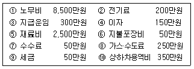
- 자가물류비 12,150만원, 위탁물류비 350만원
- 자가물류비 11,800만원, 위탁물류비 700만원
- 자가물류비 11,750만원, 위탁물류비 750만원
- 자가물류비 11,600만원, 위탁물류비 900만원
- 자가물류비 11,450만원, 위탁물류비 1,⑤0만원
(정답률: 58%)
31. 채찍효과(Bullwhip Effect)의 발생 요인에 해당하지 않는 것은?
- 가격변동의 심화
- 중앙 집중화된 수요정보
- 리드타임의 증가
- 과다한 수요예측
- 배치주문(Order Batching)
(정답률: 19%)
32. 물류 마케팅 전략에서 중요한 요소를 잘못 설명한 것은?
- 어떤 상품을 거래할 것인지, 포장과 상표는 어떻게 할 것인지의 제품전략
- 어디에 광고를 게재하고 어떤 브랜드로 차량홍보 할 것인지의 유통전략
- 백화점, 할인점, 전철역 매점 등에서 팔 것인지의 유통전략
- 물류센터 설비투자비용이나 운송비 등의 가격전략
- 가장 속도가 빠른 운송수단을 검토하는 유통전략
(정답률: 0%)
33. 다음 중 아래 설명에 해당하는 물류합리화 기법은 무엇인가?
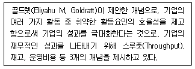
- BPR(Business Process Re-engineering)
- TQM(Total Quality Management)
- ERP(Enterprise Resource Planning)
- 6 Sigma
- TOC(Theory Of Constraints)
(정답률: 53%)
34. 물류정보시스템에 관한 다음 설명 중 가장 적절하지 못한 것은?
- EOS는 매장의 재고관리를 지원하는 시스템으로 재고량이 재주문점에 도달하게 되면 자동발주가 이루어지는 시스템이다.
- VMI란 상품 판매데이터와 판매예측을 근거로 한 소비자 수요에 기초하여 상품보충이 자동적으로 이루어지는 것으로 유통업체 보충발주의 자동화를 의미한다.
- VMI는 제조업체가 상품보충시스템을 관리하는 경우로서 상품보충시스템이 실행될 때마다 판매와 재고정보가 유통업체에서 제조업체로 전송된다.
- VMI에서는 제조업체로 전송된 정보는 상품보충시스템에서 미래 상품수요예측을 위한 데이터로 활용되며, 제조업체 생산 공장의 생산량 조절에 사용된다.
- CR(Continuous Replenishment)은 밀어내기(Push) 공급방식이 아닌 정확한 수요에 근거하여 상품이 공급되는 끌어내기(Pull) 공급방식이라 할 수 있다.
(정답률: 42%)
35. 아래에서 S기업이 물류비용 5%를 추가로 절감할 경우, S기업은 얼마의 매출액을 증가시키는 것과 동일한 효과를 얻게 되는가?
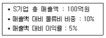
- 1억원
- 1억 1천만원
- 10억원
- 11억원
- 110억원
(정답률: 58%)
36. 최근 전자상거래의 확산과 더불어 판매된 제품이 주문과 상이하거나, 제품 하자에 따른 교환 등이 증가하고 있다. 이로 인해 기업의 관련 서비스 및 비용절감 측면에서 그 중요성이 날로 증대되고 있는 물류영역은 무엇인가?
- 조달물류
- 사내물류
- 판매물류
- 반품물류
- 폐기물류
(정답률: 69%)
37. 파렛트풀시스템(Pallet Pool System) 도입의 경제적 효과와 거리가 먼 것은?
- 하주∙유통업자의 자사소유 파렛트 활용률 제고
- 파렛트 수급파동 조절
- 파렛트 관리 일원화로 분실률 감소
- 물류관련 요소의 표준화 촉진
- 일관파렛트화(Palletization)의 실현
(정답률: 54%)
38. 물류표준화의 당위성으로 적절하지 않은 것은?
- 물류활동에 소요되는 물류비용의 절감
- 물류활동과 관련된 각 부문 상호간의 효과적 연계
- 물류활동과 관련된 신기술을 적용하기에 적합
- 물류활동과 관련된 부분들의 독립적 운용을 촉진
- 물류활동의 물류정보화 구축에 밑바탕 역할
(정답률: 59%)
39. 다음 중 마케팅과 물류와의 관계를 설명한 것으로 가장 거리가 먼 것은?
- 물류는 마케팅의 4Ps 중 Place, 즉 유통채널과 관련이 깊다.
- 물류는 포괄적인 마케팅 개념에 속하는 것으로 볼 수 있다.
- 물류와 마케팅의 상호작용에 포함되는 요소로는 재고관리와 구매계획 등이 있다.
- 물류역량이 강한 기업일수록 본래 마케팅의 기능이었던 수요의 창출 및 조절에 유리하다.
- 최근의 물류는 마케팅뿐만 아니라 생산관리 측면, 산업공학적인 측면 등 보다 광범위한 개념으로 인식되고 있다.
(정답률: 27%)
40. 다음 중 수직적 유통경로시스템의 특징으로 볼 수 없는 것은?
- 자원 및 재료 등의 안정적인 확보가 가능하다.
- 물류비 및 거래비용을 절감할 수 있다.
- 유통경로 조직 형태 중 유연성이 가장 뛰어나다
- 혁신적인 기술 보유가 가능해진다.
- 수직적 통합의 정도가 강할수록 신규 기업에게는 높은 진입장벽으로 작용한다.
(정답률: 58%)
2과목: 화물수송론
41. 전용특장차란 자체의 동력을 이용하여 장착된 기계장치를 직접 가동시켜 화물을 하역하거나 운반할 수 있도록 설계된 특수한 형태의 화물자동차를 말한다. 다음 중 전용특장차에 해당되지 않은 것은?
- 냉동차량
- 액체화물 운반차량
- 실내하역기기 장착차량
- 믹서차량
- 분립체 운반차량
(정답률: 25%)
42. 다음은 주요 운송수단에 대한 장 ㆍ 단점을 설명한 것이다. 바르지 않은 것은?
- 도로운송은 근거리와 중거리 운송에 적합하며 문전에서 문전까지의 일관수송이 가능하다.
- 도로운송은 장거리 운송시 운임이 비싸며 공해문제와 교통체증 등을 발생시키는 문제점이 있다.
- 항공운송은 운송시간이 짧고 경량품의 장거리 운송에 유리하며, 일관운송체계의 구축이 용이하다.
- 철도운송은 대량화물의 중 ㆍ 장거리 운송에 유리하며 운송의 안전성 측면에서 타 운송수단에 비해 장점이 있지만 운행시간의 탄력적 운용이 어려운 측면이 있다.
- 해상운송은 대량화물의 중 ㆍ 장거리 운송에 이용되며 화물의 중량제한을 적게 받는 장점이 있지만, 기후의 영향을 받는다는 단점이 있다.
(정답률: 39%)
43. 다음 중 철도운송에 대한 설명으로 바르지 않은 것은?
- 철도운송은 대량의 화물을 동시에 효율적으로 운송할 수 있고, 안정성과 지속가능성 측면에서 우수한 운송시스템이다.
- 철도화물의 운임체계에는 스팟(spot)운임, 선물운임, 장기계약운임 등이 있다.
- 화물운송의 거리가 장거리일수록 단위당 운임이 낮아지는 경향이 있다.
- 컨테이너 수송화차에는 오픈 탑 카, 플랫 카, 컨테이너 카, 더블 스택 트레인 등이 있다.
- 철도운송산업은 초기에 대규모 자본이 투자되어 평균비용(average costs)이 감소하는 자연독점형(natural monopoly) 산업이다.
(정답률: 20%)
44. 화물자동차 운송사업에서 발생하는 아래의 비용들 중 고정비 성격의 경비에 해당하지 않은 것은?
- 부대시설 유지관리비
- 보험료
- 감가상각비
- 제세공과금
- 연료비
(정답률: 50%)
45. 다음은 화물을 컨테이너에 적입하여 컨테이너화 함으로써 얻을 수 있는 효과를 언급하였다. 컨테이너화의 장점으로 적절치 못한 것은?
- 화물을 개별 포장할 필요가 없어진다.
- 운송 및 보관과정에서 화물을 보호하는 역할을 담당한다.
- 환적지점에서의 하역작업 단순화 및 신속성, 효율성을 증진시킨다.
- 서류취급 작업의 최소화가 가능하다.
- 세관 봉인 하에 국경통과가 가능하다.
(정답률: 10%)
46. 다음 중 농수산품 등 신선식품을 냉동, 냉장, 저온 상태로 생산자로부터 소비자에게 운송하는 방식은?
- 더블트레일러
- Hub & Spoke 시스템
- 콜드체인
- 축냉식
- 액체질소식
(정답률: 30%)
47. 다음 중 철도화차의 종류에 해당하지 않은 것은?
- 쾌속화차
- 컨테이너화차
- 유개화차
- 호퍼화차
- 탱크화차
(정답률: 19%)
48. 파렛트 풀 시스템 도입의 선행조건 중 맞지 않은 것은?
- 바닥규격이 다양한 파렛트의 대량 보유∙대여체제
- 전국적인 파렛트 집배망의 설치
- 공 파렛트의 회수체제 구축
- 파렛트의 지역적 및 계절적 수요 조정
- 관련업체간 긴밀한 협조와 정부의 적극적 지원정책
(정답률: 39%)
49. 아래 그림은 어떤 수배송시스템을 나타내는 것인가?
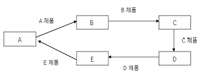
- 왕복운송시스템
- 환결운송시스템
- 1차량 2운전원 승무시스템
- 중간환승시스템
- 릴레이식 운송시스템
(정답률: 25%)
50. 아래 그림과 같이 각 구간별 운송거리가 주어졌을 때 출발지(S)에서 도착지(F)까지 최단거리는? (수송로의 단위는 km)
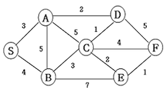
- 8㎞
- 9㎞
- 10㎞
- 11㎞
- 12㎞
(정답률: 37%)
51. 2007년 5월 남북 간 연결철도인 경의선과 동해선 철도가 시험운행에 성공하였다. 다음 중 향후 남북철도가 완전 개통시 기대되는 효과가 아닌 것은?
- 한반도의 동북아 국제복합운송거점으로서의 발전 가능성
- 한국과 유럽 간 해상운송과 철도운송 간 경쟁증대
- 한반도와 유럽 간 새로운 물류네트워크 구축을 통한 국제물류시스템의 개선
- 시베리아횡단철도(TSR)와 중국횡단철도(TCR)와의 연계 가능성
- 대륙철도와의 연계로 국내 항만의 물동량 감소
(정답률: 42%)
52. 다음의 수배송 네트워크에서 Node Ⓢ에서 Node Ⓕ까지 보낼 수 있는 최대유량은? [각 구간의 숫자는 용량을 나타냄]
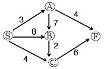
- 4
- 6
- 7
- 9
- 10
(정답률: 37%)
53. 트럭의 운임은 400원/ton ㆍ km, 철도의 운임은 150원/ton ㆍ km, 1톤당 철도운송비와 하역비가 총 40,000원 일 때, 채트반(Chatban) 공식에 의한 철도에 대한 트럭의 경쟁가능거리는?
- 72km
- 100km
- 266km
- 160km
- 140km
(정답률: 50%)
54. 다음과 같은 경우 적재율, 실제가동율, 실차율은 각각 얼마인가?
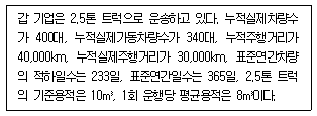
- 적재율 80%, 실제가동율 75%, 실차율 85%
- 적재율 80%, 실제가동율 64%, 실차율 75%
- 적재율 80%, 실제가동율 85%, 실차율 64%
- 적재율 85%, 실제가동율 64%, 실차율 80%
- 적재율 80%, 실제가동율 85%, 실차율 75%
(정답률: 25%)
55. 파이프라인(Pipe Line)의 특징이 아닌 것은?
- 공해 및 사고위험의 증대
- 컴퓨터 시스템 제어 용이
- 완전자동화 가능
- 하루 24시간 수송 가능
- 운송시간의 정확성
(정답률: 62%)
56. 다이어그램 배송방법에 대한 설명으로 적합한 것은?
- 차량 적재율을 기준으로 가장 적합한 배송방식을 결정한다.
- 비교적 광범위한 지역에서 소량의 화물을 주문하는 다수고객에게 배송할 때 유리하다.
- 배송범위가 60km 이상인 경우 주로 적용한다.
- 배송범위가 30km 이내, 배송빈도는 2회/일 또는 1.5회/일(30~60km)인 경우 주로 적용한다.
- 배송범위를 몇 가지 경로로 구분한 후 1회/일 배송을 원칙으로 배송차량의 크기와 출발시간을 정한다.
(정답률: 16%)
57. 아래는 단위적재 운송제도의 개념을 설명한 것이다. 다음 중 빈칸에 적절하지 못한 표현을 고르시오.
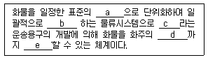
- a - 중량 또는 용적
- b - 유통가공
- c - 파렛트와 컨테이너
- d - 문전에서 문전
- e - 일관운송
(정답률: 25%)
58. 차량의 회전율을 높이는 방법과 상관없는 것은?
- 목적지까지 최단거리 코스를 운행한다.
- 화물 상차 시간을 줄인다.
- 화물 하차 시간을 줄인다.
- 특정 노선에 배차량을 늘린다.
- 운행 중 대기 시간을 줄인다.
(정답률: 43%)
59. 다음은 물류관리를 위한 화물자동차의 분류를 짝지어 놓은 것이다. 동일한 분류로 짝지어지지 않은 것을 고르시오.
- 액체운송트럭(Tank truck)-모듈트럭(Module truck)
- 덤프트럭(Dump truck)-리프트게이트트럭(Lift gate truck)
- 로울러베드트럭(Roller bed truck)-행거트럭(Hanger truck)
- 세이프로더트럭(Safe loader truck)-암롤트럭(Arm roll truck)
- 윙바디트럭(Wing body truck)-풀카고트럭(Pull cargo truck)
(정답률: 34%)
60. 수배송관리시스템을 설계할 때 고려하여야 할 기본요건이 아닌 것은?
- 지정된 시간 내에 배송목적지에 배송할 수 있는 화물의 확보
- 수주에서 출하까지 작업의 표준화 및 효율화
- 적절한 재고량의 유지를 위한 다이어그램 배송 등의 운송계획화
- 운송계획을 효율적으로 실시하기 위한 판매 및 생산의 조정
- 통로 대면의 원칙에 입각한 효율적인 Location 설계
(정답률: 47%)
61. 다음이 설명하는 것은 화물자동차 운송종류 중 어느 것을 의미하는가?
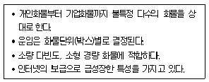
- 택배화물운송
- 일반화물운송
- 용달화물운송
- 노선화물운송
- 벌크트럭운송
(정답률: 50%)
62. 다음은 수송시스템의 방법 중 밀크 런(Milk Run) 방식을 도식화 한 것이다. 밀크 런(Milk Run) 방식을 가장 잘 표현한 그림을 고르시오.
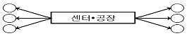
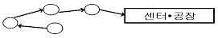
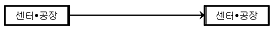
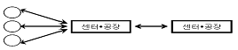
(정답률: 17%)
63. 운행경로와 일정계획의 원칙에 해당하지 않은 것을 고르시오.
- 가장 근접해 있는 지점들의 물량을 함께 싣는다.
- 운행경로는 차고에서 가장 먼 지점부터 만들어 간다.
- 차량경로상의 운행순서는 눈물방울 형태로 이루어진다.
- 가장 효율적인 경로는 이용 가능한 가장 큰 차량을 사용하여 만들어진다.
- 픽업과 배송은 각 기능의 효율성을 고려하여 별도로 이루어져야 한다.
(정답률: 40%)
64. 다음은 운행경로 설계방법을 설명한 것이다. 해당되는 방법을 고르시오.
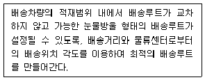
- Sweep 법
- Saving 법
- Optimizing 법
- Maximizing 법
- 최초경로 유지법
(정답률: 24%)
65. COFC(Container on Flat Car)방식에서 스프레드(Spread)지게차 또는 리치스태커(Reach stacker)를 이용하여 처리하는 경우는?
- 플랙시 밴(Flexi-Van) 방식
- 매달아 싣는 방식
- 세로-가로 이동방식
- 적∙양화 방식
- 컨테이너 이동 방식
(정답률: 34%)
66. 다음 중 공동수배송 시스템화의 효과로 볼 수 없는 것은?
- 수배송 비용의 절감
- 교통량 감소에 의한 환경보전
- 영업활동과 수배송 업무의 통합으로 인한 영업부문의 효율화
- 수배송 업무의 효율화
- 인력부족에 대처가능
(정답률: 47%)
67. <그림 1>은 배송센터에서 각 수요처까지 개별왕복운송 방법으로 수송하는 것을 나타내고 있다. 만약 <그림 2>의 형태로 순회 운송하는 방법을 채택할 경우 <그림 1>의 경우보다 운송거리는 얼마나 단축되는가? (운송구간 위의 숫자는 편도운송거리 Km)
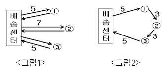
- 16 km
- 20 km
- 14 km
- 13 km
- 18 km
(정답률: 55%)
68. 공동집배송을 시행하는 경우 유의해야 하는 사항과 거리가 가장 먼 것은?
- 상품의 특성에 유사성이 있어야 한다.
- 참여기업의 매출규모가 비슷해야 한다.
- 하역특성에 유사성이 있어야 한다.
- 보관특성에 유사성이 있어야 한다.
- 정보시스템의 특성이 유사해야 한다.
(정답률: 72%)
69. 연안해상운송을 선택하는 이유로 가장 적절하지 않은 것은?
- 운송비의 절감
- 운송의 신속성
- 공로의 혼잡
- 철도운송의 한계
- 도로운송의 한계
(정답률: 46%)
70. 다음 표에서 최소비용법(Least cost Method 혹은 Minimum cell cost Method)에 의한 최초 가능해의 총 운송비용은 얼마인가? (톤당 비용은 수요지와 공급지간 단위수송비용임)
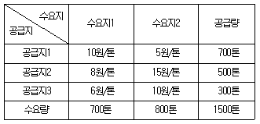
- 11,000원
- 10,000원
- 12,100원
- 15,000원
- 14,200원
(정답률: 34%)
71. 복합화물터미널에 관해 바르게 설명한 것은?
- 제조업자가 산지에서 상품을 집하하여 보관, 가공 또는 포장하고 이를 수요자에게 배송하며 관련 유통정보를 종합하여 분석처리하기 위한 시설이다.
- 유통시설과 지원시설을 집단적으로 설치ㆍ육성하기 위하여 지정ㆍ개발하는 일단의 토지이다.
- 화물의 집하, 하역, 분류, 외부포장, 보관 또는 통관에 필요한 시설을 갖춘 화물유통의 중심이 되는 장소로서 2종류 이상의 운송수단간 연계를 할 수 있는 시설이다.
- 운영주체가 유통업자 및 제조업자로서 소규모 유통단지 기능을 하면서 자기화물의 재고조절기능을 할 수 있다.
- 창고 및 유통가공시설, 정보센터 및 도매시장의 기능이 강조되는 시설이다.
(정답률: 59%)
72. 국내의 항구 간을 운항하는 화물운송을 연안해송이라 한다. 다음 중 연안해송의 장점이라 볼 수 없는 것은?
- 중량물, 장척물 등 원자재에 적합한 운송방법
- 대량화물의 국내 수송에 적합한 운송수단
- 도서지역 생필품의 안정적 공급수단
- 소량 다빈도 제품과 소형 고가제품에 적합한 운송방법
- 물류비 절감은 물론 국가 안보적 측면에서도 필요한 운송방법
(정답률: 59%)
73. 화물자동차의 운영관리 지표에 대한 설명 중 틀린 것은?
- ton km : 운송거리와 적재한 화물의 양(ton으로 환산)을 곱하여 산출한 지표를 말한다.
- 운행 km : 일정기간(1일 또는 1개월)동안 몇 km를 운행했는가에 대한 실적치를 말한다.
- 영차거리당 매출액 : 차량이 화물을 적재하고 1 km 운행하여 얼마의 매출을 올리는가를 말한다.
- 톤 당 매출액 : 매출액을 운송한 양(ton)으로 나누어 산출한 지표를 말한다.
- 회전율 : 편도운송을 한 후 귀로에 복화운송을 어느 정도 수행했느냐를 나타내는 지표이다.
(정답률: 42%)
74. 교점 개수가 N인 무방향 네트워크에서 두 교점 간에 한 개의 호(Arc)만 허용될 때 이 네트워크가 가질 수 있는 호의 최대개수를 구하라.
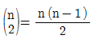
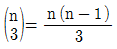
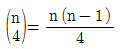
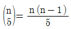
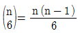
(정답률: 40%)
75. 화물차량의 위치, 적재화물의 종류, 운행상태, 노선상황, 화물알선정보 등을 자동적으로 파악하여 화물차량의 운행을 최적화하고 관리를 효율화하기 위한 지능형 교통시스템(ITS; Intelligent Transport Systems) 중의 하나는?
- EDI(Electronic Data Interchange)
- WMS(Warehousing Management System)
- ATIS(Advanced Travel Information Systems)
- CVO(Commercial Vehicle Operation)
- AVHS(Advanced Vehicle & Highway Systems)
(정답률: 67%)
76. A사는 10대의 화물자동차를 운영하고 있다. 개별차의 연간 총 운행거리는 50,000km이며, 각 차량은 4개의 타이어를 부착하고 있고, 타이어 교환주기는 25,000km이다. 타이어 한 개의 가격을 10만원이라 할 때 A사의 연간 타이어 소모비용은 얼마인가?
- 800만원
- 1,000만원
- 1,600만원
- 2,000만원
- 2,400만원
(정답률: 47%)
77. 모달 시프트(Modal Shift)는 수송수단을 바꾸는 것으로서 간선화물수송에 있어 트럭으로부터 선박으로 수송수단을 전환하는 것이 그 한 예인데, 이 경우의 모달 시프트에 관한 설명 중 가장 옳지 못한 것은?
- Modal Shift 정책은 도로운송위주의 고비용 물류체계를 개선하기 위한 시책이다.
- 정부의 사회간접자본 투자 예산배정과정에서 항만에 대한 투자를 늘려야 할 것이다.
- 물류비용을 최소화하기 위해 기존 도로운송을 연안운송으로 완전히 전환해야 한다.
- 부산항을 비롯한 국내항만에 외항모선과 연안선이 동시 접안할 수 있는 방안이 고려되어야 한다.
- 성공적인 Modal Shift를 위해서는 고속 경제선의 확보가 필요하다.
(정답률: 43%)
78. 실제중량이 5kg이며, 가로, 세로, 높이가 각각 30.5cm, 55cm, 24.5cm의 박스 3개를 항공화물로 운송하고자 할 때 운임적용 중량은? (계산결과는 반올림하여 정수로 산정하시오)
- 15 kg
- 20 kg
- 21 kg
- 42 kg
- 45 kg
(정답률: 47%)
79. 운송관리시스템(Transportation Management System)의 구축 목적과 가장 거리가 먼 것은?
- 내부 운송 관리 시스템의 기반 구축
- 고객에 대한 차량소요계획, 배차의뢰 및 배차, 출고작업, 수배송의 연계로 고객서비스 향상
- 화물과 운송서비스의 중계 및 경매 활성화
- 운송프로세스에 있어서 고객과 파트너 간 협력체계 구축을 통한 업무효율 향상
- 다양한 고객을 위한 인터페이스 기반 구축
(정답률: 55%)
80. Hub & Spoke 시스템의 특징에 해당되지 않은 것은?
- 노선의 수가 적어 운송의 효율성이 높아진다.
- 허브터미널의 수가 증가한다.
- 10개의 노드(node)가 있을 경우, Hub & Spoke 시스템을 채택할 경우 9개의 링크(link)가 발생한다.
- 전체적인 터미널 작업인력이 감소한다.
- Hub & Spoke 시스템은 해상운송, 항공운송 및 육상운송에 전부 적용될 수 있다.
(정답률: 42%)
3과목: 국제물류론
81. 다음 중 국제물류와 국내물류의 특성에 대한 차이를 설명한 것 중 옳지 않은 것은?
- 국제물류는 통관절차 등에 대한 서류처리가 복잡하여 운송주선인, 통관중개인 등의 활용이 증가되는 경향이 있다.
- 국제물류는 환율과 인플레이션 등 위험요소가 크지만 손해와 하자 발생시에 약속이행의 강제는 어렵지 않다.
- 국제물류의 수행은 운송영역이 넓고 대량화물을 운송해야 하기 때문에 수송시장의 환경적인 제약을 많이 받는 것이 일반적이다.
- 국제물류 수행 시 국가 간의 문화적인 차이나 상관습의 차이로 인하여 상품취급상의 어려움이 있을 수 있다.
- 국제화물운송에서는 도로 ㆍ 철도 ㆍ 항공 ㆍ 해운 간의 복합 연계수송이 매우 중시된다.
(정답률: 42%)
82. Incoterms의 CIF조건에서 보험증권(Insurance Policy) 발급 시에 보험계약자는 누가 되는가?
- 수입상
- 수출상
- 수출상 거래은행
- 신용장 개설은행
- 매입은행
(정답률: 19%)
83. 다음 중 컨테이너운송의 장점을 최대한으로 이용 함으로써 운송의 궁극적 목적인 Door to Door System 서비스를 실현하는 것은?
- LCL/LCL
- CY/CY
- CFS/CY
- CY/CFS
- FCL/LCL
(정답률: 15%)
84. 다음 trade term은 Incoterms 2000 중 어느 조건을 설명하는 것인지 선택하시오.
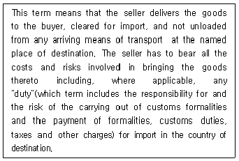
- EXW
- DDU
- CIF
- DDP
- FOB
(정답률: 34%)
85. 수입통관에 따른 관세액은 얼마인가?(US$ 기준)(85번 공통지문 문제)
- 35,215
- 35,180
- 35,145
- 35,085
- 35,025
(정답률: 24%)
86. 컨테이너 터미널 구조에 대한 설명 중 옳지 않은 것은?
- Berth는 선박을 항만내에서 계선시키는 시설을 갖춘 접안장소로 보통 표준선박 1척을 직접 정박시키는 설비를 지니고 있다.
- Control Tower는 컨테이너 야드 전체가 내려다 보이는 곳에 위치하여 컨테이너 야드의 작업을 통제하는 사령실이다.
- Apron은 선적해야 할 컨테이너를 하역 순서대로 정렬해 두거나 양하된 컨테이너를 배치해 놓은 장소이다.
- Container Yard는 컨테이너를 인수 및 인도하고 보관하는 장소이다.
- Container Freight Station은 소량화물(LCL)을 인수 및 인도하고 보관하거나 컨테이너에 적입 또는 적출작업을 하는 장소이다.
(정답률: 47%)
87. 국제간에 발생하는 클레임을 원만하게 해결하기 위하여 한 국가에서 내려진 중재판정을 다른 국가에서도 승인 및 집행할 수 있도록 1958년 체결된 국제협약은?
- New York Convention
- York Antwerp Rules
- Warsaw Convention
- Hague Rules
- Incoterms
(정답률: 30%)
88. 다음 중 빈칸에 공통으로 들어갈 적당한 말을 고르시오.
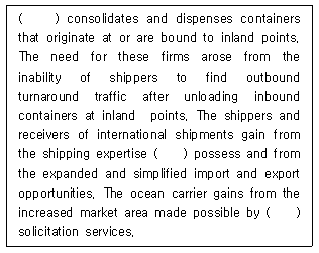
- NVOCC
- Customs Broker
- Export Agent
- Inventory Holder
- Inbound Manufacturer
(정답률: 20%)
89. 국제물류의 일반적인 국제화 단계를 나열한 것 중 가장 옳은 것은?
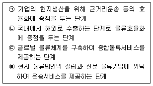
- ㉠ → ㉡ → ㉢ → ㉣
- ㉠ → ㉡ → ㉣ → ㉢
- ㉡ → ㉠ → ㉢ → ㉣
- ㉡ → ㉠ → ㉣ → ㉢
- ㉡ → ㉣ → ㉠ → ㉢
(정답률: 22%)
90. 국제물류의 허브(Hub)가 되기 위한 조건으로 가장 옳지 않은 것은?
- 다국적 물류전문기업들을 유치하며, 국내물류 기업도 경쟁력 있는 전문기업으로 성장해야 한다.
- 주변 국가들과 Feeder선 연계를 강화하기 위한 노력이 필요하다.
- 환적 및 일시적 보관, 유통가공을 용이하게 하는 법/제도적 지원이 요구된다.
- 다양한 수송서비스 기능이 복합적으로 연계되는 항만, 공항의 편리성과 접근성이 중요하다.
- 국적항공운송사 및 국적선사의 운송서비스를 우선적으로 고려하는 정책이 필요하다.
(정답률: 31%)
91. 국제물류의 복잡성이나 제약성을 극복하면서 장소적, 시간적, 공간적 효용을 창조할 수 있도록 뒷받침하고 있는 국제물류의 기능에 대한 설명 중 옳지 않은 것은?
- 운송기능은 운송수단의 선택과 운송스케줄 관리, 운송중개인의 선정, 운송루트의 채택 등이 요구된다.
- 하역기능은 하역설비 등을 이용하여 수송화물을 적하 및 양하하는 것과 창고내의 입출고를 위한 설비기능이 중요한 요소가 된다.
- 보관기능은 집화된 화물의 혼재 및 분산, 화인(Shipping Mark)등을 통해 내용물을 보호하고, 취급을 용이하게 하며, 판매를 촉진할 수 있는 기능을 말한다.
- 계획기능은 전략적 목표하에서 어떤 시설의 설치, 다양한 수송수단의 루트 비교, 수송수단의 이용가능성 등이 잘 조화될 수 있도록 하는 것이다.
- 행정 및 보관기능은 운송수단의 예약과 주문관리, 재고 및 화물이동 추적, 선적관련 서류작성, 국제세관에 관한 정보, 시장 정보제공, 특이상황을 포함한 활동보고 및 관리보고서 작성 등의 업무를 말한다.
(정답률: 25%)
92. 선박 및 항만 물동량을 나타내는 기본 단위는?
- CBM
- FEU
- FCL
- LCL
- TEU
(정답률: 24%)
93. 다음 중 운임이 가장 비싼 조건은?
- Free Term
- Berth Term
- FO
- FIO
- FI
(정답률: 10%)
94. 프레이트 포워드(Freight Forward)의 주요 기능으로 옳지 않은 것은?
- 운송에 대한 전문적인 조언
- 운송수단의 예약(Booking)
- 본선과 화물의 인수 또는 인도
- 운송관계서류의 작성(선하증권, 선복예약서, 선적허가서, 부두수령증, 수출입 허가서)
- 포장, 보관업무 및 매매계약 주선
(정답률: 17%)
95. 선하증권과 항공화물운송장에 대한 설명으로 옳지 않은 것은?
- 항공화물운송장은 양도성이 있고, 선하증권은 양도성이 없다.
- 항공화물운송장은 기명식이며, 선하증권은 무기명식이다.
- 항공화물운송장은 화물인수시에 발행하며, 선하증권은 선적 후에 발행된다.
- 항공화물운송장은 송화인이 작성하는 것을 원칙으로 하며, 선하증권은 선박회사가 작성한다.
- 항공화물운송장과 선하증권은 운송인과 송화인과의 사이에 운송계약이 성립되고 있음을 증빙하는 서류라는 점에서 동일하다.
(정답률: 9%)
96. 다음 중 선박이 정박하여 하역작업 개시일부터 종료일까지 일요일이나 공휴일을 모두 포함한 일수를 정박기간으로 계산함으로써 용선자에게 가장 불리한 조건은?
- WWD SHEX unless used
- Running Laydays
- WWD SHEX
- WWD
- CQD
(정답률: 15%)
97. 용선계약에 관한 다음 정리 중 가장 옳지 않은 항목은? (순서대로 구분, 항해용선, 정기용선, 나용선)
- 계약의 본질, 운송행위 제공, 운송능력 제공, 운송수단 제공
- 용선의 기간, 선적지~양륙지, 약정기간(중기), 약정기간(장기)
- 용선료, 선박 임차료, 기간에 비례, 화물량에 비례
- 선주의비용 부담, 화물이외의 전체, 선비, 간접선비+선박보험
- 용선자비용 부담, 화물관련비용, 운항비, 직접선비+선박보험
(정답률: 30%)
98. 다음 중 해상운송에 관한 국제법규인 헤이그규칙(Hague Rules)과 헤이그-비스비규칙(Hague- Visby Rules)에서 차이가 있는 항목은 어느 것인가?
- 갑판적하물
- 운송인의 책임기간
- 소송 제소기간
- 포장단위 정의
- 적용범위
(정답률: 25%)
99. 1980년 UN국제복합운송조약에서 채택하고 있는 복합운송인의 책임제도는?
- Network Liability System
- Modified Uniform Liability System
- Uniform Liability System
- Tie-up Liability System
- Liability Without Negligence
(정답률: 28%)
100. 항공화물운송장과 관련하여 다음의 빈 칸에 들어갈 용어로 알맞은 것은?
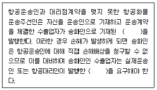
- House Air Waybill, Master Air Waybill
- Master Air Waybill, House Air Waybill
- House Air Waybill, Master Sea Waybill
- Master Sea Waybill, House Sea Waybill
- House Sea Waybill, Master Sea Waybill
(정답률: 28%)
101. 동북아에 A, B, C, D, E, F 6개의 항이 있고 각 항마다 10 TEU씩 적재와 하역이 이루어지며, 1개의 항마다 기항하여 작업하는데 하루의 시간이 소요된다. 이 경우 모든 항만을 순차적으로 경유하는 밀크 런(Milk-Run)서비스 수송방식 적용 시 동북아 6개항의 물동량은 모두 얼마인가?
- 0 TEU
- 60 TEU
- 80 TEU
- 100 TEU
- 120 TEU
(정답률: 8%)
102. 다음 빈 칸에 들어갈 각각의 용어로 알맞은 것은?
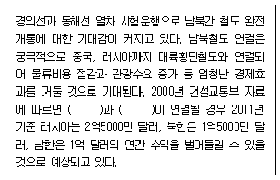
- TKR, TCR
- TMR, TCR
- TKR, TSR
- TCR, TSR
- TKR, TAR
(정답률: 9%)
103. 생산과 조달의 세계화에 따라 국제물류에서도 여러 새로운 움직임이 일어나고 있다. 다음 국제물류의 동향에 대한 설명 중 가장 옳지 않은 것은?
- Physical Distribution이나 Logistics에서 SCM을 중시하는 방향으로 바뀌고 있다.
- 물류비의 최적화를 위해 국제물류기업간의 전략적 제휴나 M&A가 활발해지고 있다.
- 국제물류의 발달에 따른 운송기능의 향상으로 물류거점 수가 증가되고 있다.
- 자원의 재활용과 환경보존이라는 시대적 요구에 부응하기 위해 그린 로지스틱스(Green Logistics)가 발달하고 있다.
- RFID와 같은 물류신기술이 등장함에 따라 새로운 운송경로와 수단을 통해 시간과 비용절감을 모색하고 있다.
(정답률: 9%)
104. 글로벌화, 유통패턴의 변화, 물류비에 대한 관심 고조 등 경제 및 무역환경변화가 국제 류체계에 미친 영향에 대한 설명 중 옳지 않은 것은? (순서대로 주요 요소, 과거, 현재)
- 단위당 물품 취급 규모, 대규모, 소규모
- 수송 및 유동빈도, 낮음, 노ㅠ음
- 수송시간, 장시간, 단시간
- 주문시간, 장시간, 단시간
- 재고규모, 소규모, 대규모
(정답률: 8%)
1⑤. 항공화물운송의 서비스 측면에서 가지는 장점을 설명한 것 중 옳지 않은 것은?
- 급격한 수요변동에 효율적으로 대처할 수 있다.
- 변질성이 강한 제품에 대한 시장확대가 가능하다.
- 고객서비스 향상으로 매출증대가 가능하다.
- 재고가 감소하여 투입자본 및 재고관리비가 증가된다.
- 판매기간이 짧은 상품에 대한 시장 확보가 가능하다.
(정답률: 36%)
106. 통관을 위해 물품을 일시 장치하는 장소로서 세관장이 지정하는 구역이며 이곳의 물품장치기간은 6개월 범위 안에서 관세청장이 정한다. 이러한 보관시설은?
- 보세장치장
- 보세창고
- 지정장치장
- CY
- CFS
(정답률: 31%)
107. 국제복합운송에 관한 다음 설명 중 옳지 않은 것은?
- 컨테이너화(containerization)는 국제복합운송을 촉진시키는 요인으로 작용하고 있다.
- 전 구간을 통틀어 단일의 운임이 적용된다.
- 송화인은 전 구간에 대하여 하나의 운송계약을 체결한다.
- 국제복합운송에서 운송을 담당한 모든 운송인은 송화인에 대하여 직접적인 책임을 부담한다.
- 복합운송은 2가지 이상 서로 다른 운송수단에 의하여 이행된다.
(정답률: 28%)
108. 해상보험에서 피보험이익의 당사자가 될 수 없는 자는?
- 선취특권자
- 손해사정사
- 용선자
- 포획자
- 선장
(정답률: 10%)
109. 다음 중 해상에서 우연히 발생하는 사고나 재해를 의미하는 해상고유의 위험으로 옳지 않은 것은?
- 침몰(Sinking)
- 좌초(Stranding)
- 악천후(Heavy Weather)
- 투하(Jettison)
- 충돌(Collision)
(정답률: 46%)
110. 해상보험에서 보험금을 청구할 때 구비하는 서류가 아닌 것은?
- 신용장
- 선하증권
- 상업송장
- 포장명세서
- 해난보고서
(정답률: 0%)
111. 수입통관절차에 대한 설명 중 옳지 않은 것은?
- 물품을 수입하고자 하는 자는 사전에 해당 물품이 관련법령에 의한 수입요건(검사, 검역, 추천, 허가 등)을 구비하여야 하는지 여부를 확인하고 수입계약을 체결한다.
- 원칙적으로 모든 수입물품은 세관에 수입신고를 하여야 하며, 수입신고가 수리되어야 물품을 국내로 반입할 수 있다.
- 수입신고 시에는 수입신고서에 선하증권, 상업송장, 포장명세서 등과 같은 서류를 첨부하여 세관에 제출한다.
- 수입신고는 화주, 관세사, 통관법인 또는 관세사법인의 명의로 신고가 가능하다.
- 수입하고자 하는 자는 보세구역 장치 후에만 수입 신고가 가능하다.
(정답률: 31%)
112. 다음 항공화물운송 중 발생한 손해에 대한 통보기한 및 제소기한이 올바르게 기술된 것은?
- 화물운송 지연시 클레임(claim)은 화물을 인도받을 정당한 권리를 가진 자가 그 화물을 처분할 수 있는 날로부터 14일 이내
- 화물의 전부분실에 대한 클레임(claim)은 항공운송장(AWB) 발행일로부터 30일 이내
- 화물의 손해에 대한 제소는 도착지에의 도착일, 항공기가 도착하여야 할 날짜 또는 운송의 중지일로부터 기산하여 1년의 기한 내 제기
- 화물손상의 경우 클레임(claim)은 화물을 인수한 날로부터 14일 이내
- 화물의 일부손실의 경우 클레임(claim)은 발견 즉시 또는 화물을 인수한 날로부터 10일 이내
(정답률: 36%)
113. “Transport documents must be presented within 7 days after the date of issuance but within the validity of this credit"의 문장이 나타내고 있는 내용은?
- S/D(Shipping Date) : 선적일
- ETA(Expected Time of Arrival) : 도착예정일
- ETD(Expected of Departure) : 출항예정일
- ETR(Estimated Time of Readiness) : 하역준비완료 예정시각
- E/D(Expiry Date) : 유효기일
(정답률: 9%)
114. 화물이 먼저 도착하였으나 선하증권이 도착하지 않은 경우 수화인이 수입지 거래은행으로부터 발급받아 선박회사에 화물의 인도를 요청할 수 있는 서류는?
- Delivery Order
- Mate's Receipt
- Tally Sheet
- Letter of Indemnity
- Letter of Guarantee
(정답률: 23%)
115. Incoterms 2000에서 정하고 있는 거래조건 중 매도인의 비용부담이 적은 것으로 부터 큰 것으로 열거된 것은?
- EXW → FOB → CFR → CIF → DDP → DDU
- EXW → CFR → FOB → CIF → DDU → DDP
- DDU → DDP → CIF → CFR → FOB → EXW
- EXW → FOB → CFR → CIF → DDU → DDP
- DDP → DDU → CIF → CFR → FOB → EXW
(정답률: 16%)
116. 다음 그림이 나타내는 하역장비의 이름이 바르게 표기된 것은?
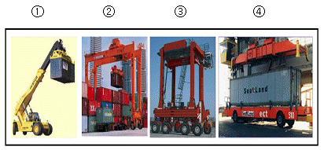
- ① 리치스테커(Reach Staker) → ② 트랜스테이너(Transtainer) → ③ 스트래들케리어(Straddle Carrier) → ④ 무인운반차(Automatic Guided Vehicle)
- ① 트랜스테이너(Transtainer) → ② 무인운반차(Automatic Guided Vehicle) → ③ 스트래들케리어(Straddle Carrier) → ④ 리치스테커(Reach Staker)
- ① 무인운반차(Automatic Guided Vehicle) → ② 리치스테커(Reach Staker) → ③ 트랜스테이너(Transtainer) → ④ 스트래들케리어(Straddle Carrier)
- ① 무인운반차(Automatic Guided Vehicle) →② 스트래들케리어(Straddle Carrier) →③ 트랜스테이너(Transtainer) → ④ 리치스테커(Reach Staker)
- ① 리치스테커(Reach Staker) → ② 스트래들케리어(Straddle Carrier) → ③ 무인운반차(Auto-matic Guided Vehicle) → ④ 트랜스테이너(Trans tainer)
(정답률: 0%)
117. 다음 Incoterms에 대한 설명으로 옳지 않은 것은?
- Incoterms는 매매계약에 따른 계약의 위반과 계약당사자의 권리구제 등의 사항에 관하여는 다루지 아니한다.
- Incoterms는 그 자체가 국제적인 협약이나 조약과 같은 강제력을 갖는다.
- Incoterms는 계약당사자들의 상호 합의에 따라 채택하여 적용할 수 있다.
- Incoterms는 매매당사자의 권리 의무 관계를 규정하고 있다.
- Incoterms는 2000년도에 제6차 개정이 되었으며, 현재 13가지 정형거래조건으로 구성되어 있다.
(정답률: 10%)
118. "한국상사”는 대만의“정한 Hi-Tech”사와 LCD제품 수출계약을 체결하였다. "한국상사"는 "정한 Hi-Tech”사의 주문량에 대응하기 위하여 다음과 같은 조건으로 재주문점(Reorder Point)을 설정하고자 한다. 이 경우 재주문점 수량을 구하시오.(소수점 이하는 버림)
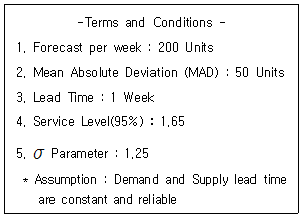
- 303
- 304
- 3⑤
- 306
- 307
(정답률: 0%)
119. 일반거래조건협정서(Agreement on General Terms and Conditions of Business)에서 설명하고 있는 다음 조항은?
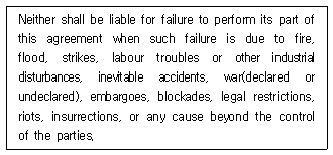
- Claim Clause
- Governing Law Clause
- Force Majeure Clause
- Arbitration Clause
- Infringement Clause
(정답률: 25%)